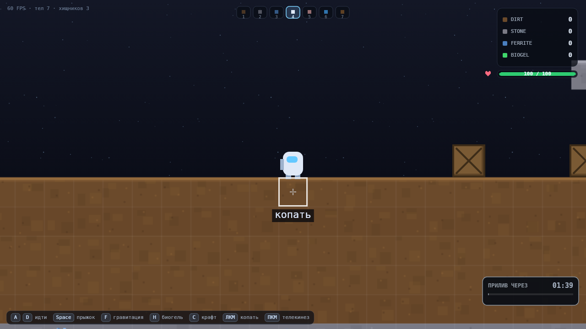
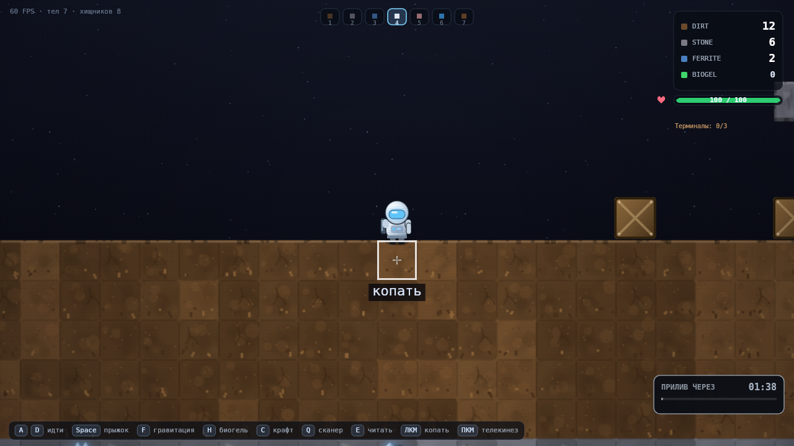
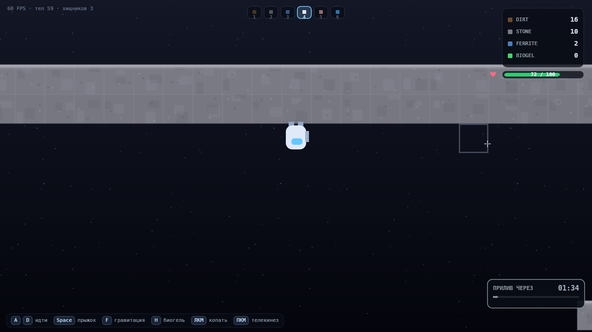
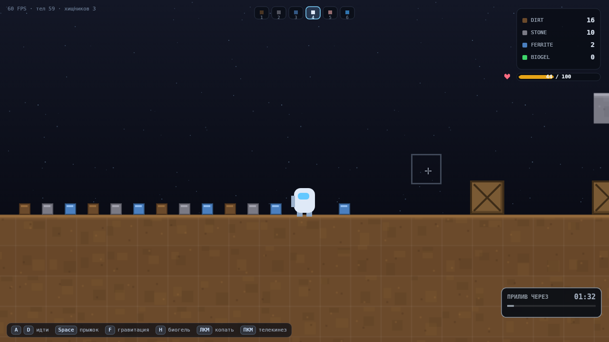
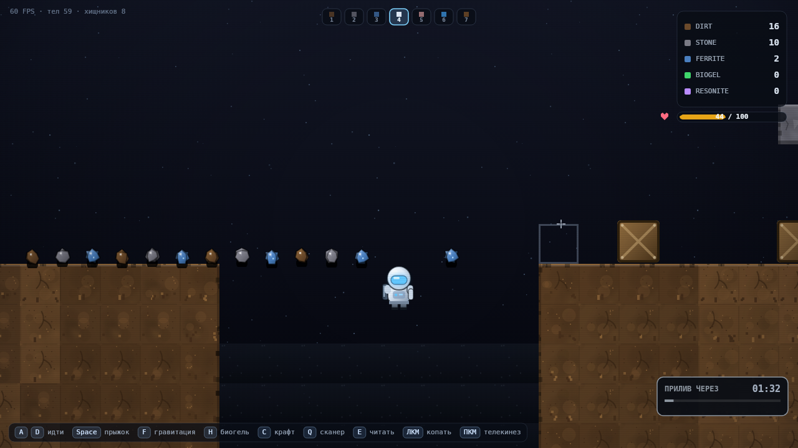

01Сборка
Игра встроена ниже. Если она не загрузится — останется кадр-скриншот и ссылки: пустого экрана не будет.

GRAVITY: VOID — итерация 1A
Кликните «Запустить», затем кликните по картинке игры, чтобы клавиатура заработала.
A / D — идти · Space — прыжок · F — гравитация · ЛКМ — копать или тянуть · ПКМ — толчок.
02Что работает
По каждому пункту есть автоматическая проверка (45/45) и кадр на скриншоте.
Мир как тайловая сетка
- 200×100 тайлов по 32 px, слои: небо → потолочная плита → зал с уступами →
DIRT→STONE. - Верхние 5 рядов гарантированно пустые,
FERRITE— 5 % в породе.
Копание
- ЛКМ по тайлу в радиусе 4 тайлов;
DIRT0.15 с,STONE0.50 с,FERRITE0.70 с. - Прогресс: заливка тайла + трещины + полоса. Отпустил ЛКМ — сброс.
Дропы и подбор
- Физические 12×12: падают, сталкиваются с тайлами, отскакивают, засыпают.
- Просыпаются от копания рядом и от переворота гравитации.
- Автоподбор при касании игрока + burst из 6 частиц.
HUD и отклик
- Три строки с иконками 10×10, цифры пульсируют 200 мс.
- Частицы копания и пыль в процессе, подсказки «копать / тянуть / далеко».
Производительность
- Тайлы — в offscreen-буфере: в простое 0
fillRectв буфер и 1drawImageза кадр. - Кадр p50 ≈ 4.8 мс, p95 ≈ 5.2 мс при 300+ телах.
Гравитация Milestone 0
- Переворот работает: игрок встаёт на потолочную плиту, не застревает в ней.
- Дропы и ящики тоже падают вверх и не проваливаются сквозь плиту.
03Что не работает / где неприятно
Честно, с указанием, что уже видно на скриншотах.
ЛКМ у ног перехватывает дроп
- Приоритет отдан телу: нажатие по дропу — это телекинез, а не копание.
- Логично, но когда дропов много и они лежат у ног, копание под собой становится капризным.
- Решение за вами: развести копание на ЛКМ, телекинез на ПКМ, толчок на Shift+ПКМ.
Дропы слипаются в полосу
- На 50+ дропах они лежат вплотную друг к другу и читаются как одна серая лента.
DIRT-дропы почти сливаются с землёй того же цвета.- Кандидат: светлая обводка 1 px + магнит подбора в радиусе 1.5 тайла.
Дропы копятся на потолке
- После переворота гравитации ресурс падает вверх и остаётся там до второго переворота.
- Это физически правильно, но ресурс фактически теряется.
- Нужно ваше решение: оставить или включить магнит подбора.
Тяжёлые тайлы ощущаются так же, как земля
STONEиFERRITEпросто дольше — нет тактильного отличия.- Кандидат: микро-тряска камеры на последних 20 % и другой звук (звук — отдельная итерация).
04Не соответствует скоупу
| Что | Почему так | Что делать |
|---|---|---|
| Собран Milestone 0 персонаж, физика, переворот, телекинез, ящики |
В репозитории лежал только README.md — прототипа 0 не было, расширять было нечего.
Без тайлового мира копать нечего, поэтому база вошла в 1A. |
Либо принять как «1A с базой», либо прислать Milestone 0 — сведу управление и ощущение 1:1. |
| Масштаб камеры 2× параметр сверх задания |
При 32 px и 1:1 на 1280 px видно 40 тайлов, мир читается мелкой сеткой. С 2× тайл становится клеткой. | Считаю обязательным, но это меняет «сколько мира видно». Решается одной константой CFG.camera.zoom. |
| Подсказки и кольцо радиуса обучение в игре |
Прогресс-бар и радиус без пояснения читались не сразу; кольцо показывается 0.9 с после переворота. | Если лишнее — убрать drawRadius и подписи у курсора. |
| Вне скоупа сделано не было | Нет крафта, врагов, сохранений, смены мировой гравитации, звука, UI-библиотек. | ок |
05Чинить до 1B
Иначе 1B унаследует эти вещи: стройка работает по тайлам и по ЛКМ — ровно там же, где сейчас конфликт.
| Приоритет | Задача | Почему до 1B |
|---|---|---|
| must | Решить раскладку ЛКМ/ПКМ копать / телекинез / толчок |
В 1B на ЛКМ добавляется ещё и постановка блока — на одном крючке станет три действия. |
| must | Магнит подбора 1.5 тайла + обводка дропа | Убирает и «ленту» дропов, и потерю ресурса на потолке. |
| should | Развести визуально DIRT-дроп и землю |
Иначе накопленное не видно на фоне породы. |
| should | Подтвердить радиус и ощущение тяжести | От радиуса копания зависит и радиус стройки в 1B (по заданию 5 тайлов). |
| nice | Микро-тряска на STONE/FERRITE, звук |
Звук — отдельная итерация, требует ассетов. |
06Запросы ревью
1. Сколько тайлов по горизонтали?
Сейчас ≈20 (1280 px / (32 px × 2)). Больше — мельче персонаж, меньше — теснее при копании и стройке.
Это CFG.camera.zoom, меняется одной цифрой.
2. Нужно ли «провисание» породы?
Если да — это отдельная подсистема, и 1B надо строить с опорой у стены. Если нет — фиксируем статичные тайлы.
3. Дропы на потолке — терпим?
Физика честная, но ресурс теряется. Магнит подбора решает, но это уже «качество жизни», а не механика.
4. Радиус от центра или от ног?
Сейчас от центра игрока: под собой достаётся больше, чем на 4 тайла. В 1B радиус стройки 5 — мерить так же?
5. Блок в воздухе?
Главный вопрос к 1B: можно ли ставить тайл, который ни к чему не примыкает? От этого зависит, станет ли стройка лестницами в небо.
6. «3 удара» = 0.5 с?
В задании были и удары, и секунды. Сделано одно удержание, удары показаны ростом трещин. Если нужны настоящие клики — переделывать ввод.
07Скриншоты
Сняты из реального рендера игры (tools/screenshots.mjs), не макеты.








08Как проверено
Воспроизводится без браузера: Node + заглушки DOM/Canvas.
# 45 автопроверок логики и физики cd tools npm i @napi-rs/canvas # только для скриншотов; игра зависимостей не имеет node verify.mjs # → 45/45 проверок пройдено node screenshots.mjs # → 9 кадров в ../screenshots
Что покрыто проверками
- Генерация мира, пустые верхние ряды, потолочная плита.
- Ходьба, прыжок, границы мира, отсутствие застревания в тайлах.
- Тайминги копания по типам, сброс прогресса, «далеко».
- Спавн, падение, сон, подбор на ходу, частицы, пульсация HUD.
- Телекинез ящика и дропа, падение ящика без опоры.
- Переворот гравитации: потолок, прыжок, дропы вверх и сквозь плиту.
- Буфер тайлов: 0 перерисовок в простое, 1
drawImageза кадр.
Чем это не является
- Не браузерный замер FPS: цифры — время JS+draw в headless-среде.
- Не проверка ощущения: «щёлкает» ли копание — только руками.
- Не покрытие рендера: скриншоты снимаются, но не сравниваются попиксельно.